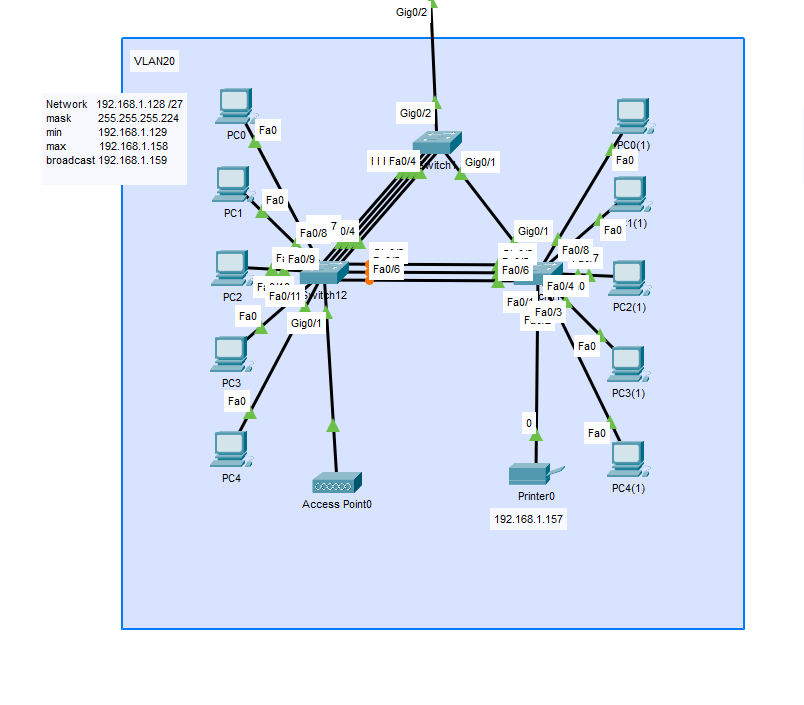
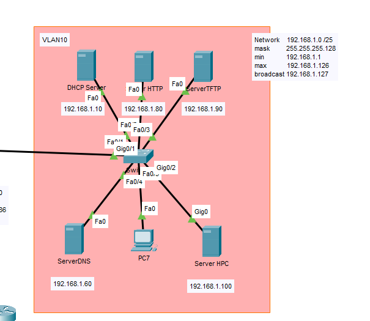

Topology
The topology was based on the needs of the company.
The company is connected to the ISP via optical line. The topology consists of 3 vlans (VLAN10, 20 and 30), which contain the servers, the computers of the employees and the CEOs respectively.
 The picture represents an older version of the Topology
The picture represents an older version of the Topology
The subnets are connected with redundancy, so in case of any damage or malfunction regarding the routers and the cables the network will still work.
The subnet of the employees can serve up to 30 devices, thus the computers and the printer can all fit into the subnet with extra capacity for phones with an access-point set up. The switches are connected with etherchannel for extra redundancy and speed.
The network of the servers won't be built like the picture, it's a representation of how will different services, like DHCP, DNS and Webservice run on different ips with portforwarding. The SAS Drives of the Storage server will be connected with RAID5. HPC(High-Performance Computation) Servers will take up most of the space in the room. To set up these servers, we'll need the help of the expert(s) sent by the providing company. |
 |
In the project a cloud-based Storage server was also set up. The Network Address Translation between the ISP and the sites is still under development. |
|